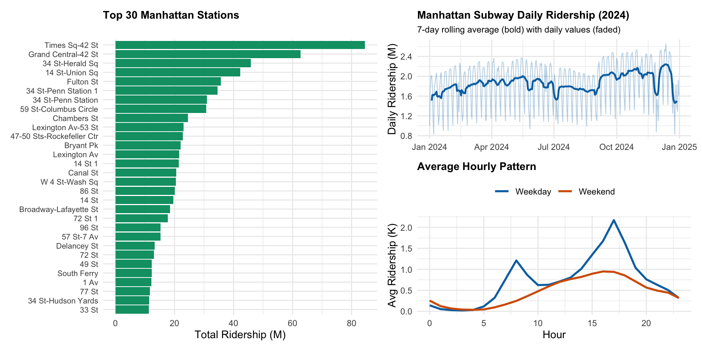
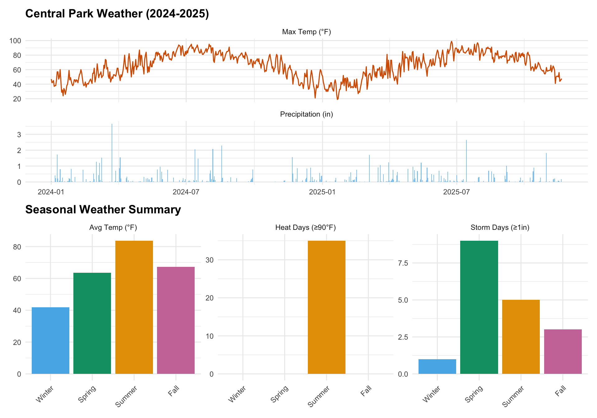
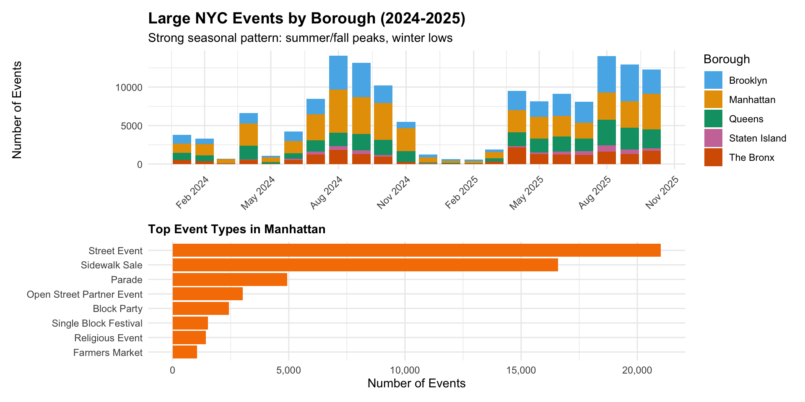
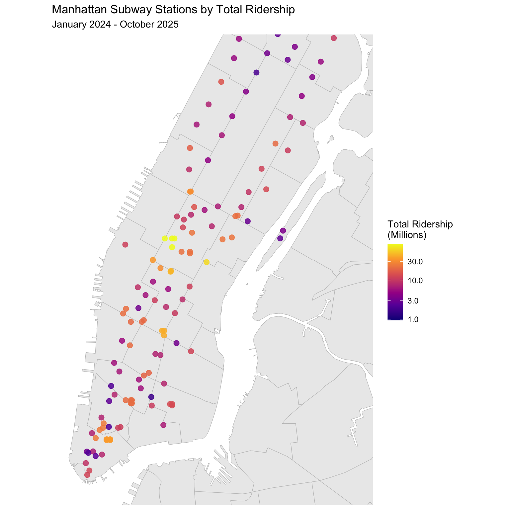

We acquired four datasets for analyzing weather and event impacts on Manhattan subway ridership (2024-2025). This page documents both our data sources and the wrangling pipeline that transforms raw data into analysis-ready panels.
The Disaggregation Challenge:
The MTA ridership dataset is highly disaggregated to capture detailed fare collection patterns. Each hourly observation is broken down by:
This granularity creates a data explosion problem. For Manhattan’s 123 stations during a single week:
123 stations × 24 hours × 7 days × 11 fare categories × 2 payment methods = 227,304 records per week
For our complete 2024-2025 dataset (22 months ≈ 95 weeks), this would generate 21.6 million records—far exceeding the Socrata API’s 100,000-record pagination limit and creating unwieldy file sizes for analysis.
The Solution:
Since our research questions focus on total ridership rather
than fare type breakdowns, we leveraged the Socrata API’s server-side
aggregation capabilities. Using SUM() with
$group, we aggregated across all fare types and payment
methods before data transfer.
"$select" = "transit_timestamp, station_complex_id, station_complex,
borough, SUM(ridership) as total_ridership",
"$group" = "transit_timestamp, station_complex_id, station_complex, borough"This reduced records by 96% (from 21.6M to 1.92M), making monthly downloads feasible within API limits while preserving the station-hour granularity needed for our weather and event analyses.
This yielded 1,921,163 hourly observations across 123 Manhattan stations from 2024-01-01 to 2025-10-19.
# Daily trend (2024 only) with 7-day rolling average
daily_ridership <- ridership |>
filter(year(date) == 2024) |>
group_by(date) |>
summarize(total = sum(total_ridership, na.rm = TRUE) / 1e6, .groups = "drop") |>
arrange(date) |>
mutate(
rolling_avg = slide_dbl(total, mean, .before = 3, .after = 3, .complete = TRUE)
)
p_daily <- daily_ridership |>
ggplot(aes(x = date)) +
geom_line(aes(y = total), color = okabe_ito$blue, alpha = 0.3, linewidth = 0.4) +
geom_line(aes(y = rolling_avg), color = okabe_ito$blue, linewidth = 0.9) +
scale_y_continuous(labels = comma) +
labs(
title = "Manhattan Subway Daily Ridership (2024)",
subtitle = "7-day rolling average (bold) with daily values (faded)",
x = NULL, y = "Daily Ridership (M)"
) +
theme(plot.title = element_text(size = 11), plot.subtitle = element_text(size = 9))
# Hourly pattern
p_hourly <- ridership |>
mutate(weekday_type = ifelse(wday(date) %in% 2:6, "Weekday", "Weekend")) |>
group_by(hour, weekday_type) |>
summarize(avg = mean(total_ridership, na.rm = TRUE) / 1000, .groups = "drop") |>
ggplot(aes(x = hour, y = avg, color = weekday_type)) +
geom_line(linewidth = 1) +
scale_color_manual(values = c("Weekday" = okabe_ito$blue, "Weekend" = okabe_ito$vermillion)) +
labs(title = "Average Hourly Pattern", x = "Hour", y = "Avg Ridership (K)", color = NULL) +
theme(legend.position = "top", plot.title = element_text(size = 11))
# Top stations
p_top <- ridership |>
group_by(station_complex) |>
summarize(total = sum(total_ridership, na.rm = TRUE) / 1e6, .groups = "drop") |>
slice_max(total, n = 30) |>
arrange(total) |>
mutate(
# Truncate station names at first '(' for cleaner display
station_short = str_replace(station_complex, "\\s*\\(.*", ""),
# Make names unique by adding row number suffix if duplicates exist
station_short = make.unique(station_short, sep = " "),
# Use factor with levels in current order to preserve sorting
station_short = factor(station_short, levels = station_short)
) |>
ggplot(aes(x = total, y = station_short)) +
geom_col(fill = okabe_ito$green) +
scale_x_continuous(labels = comma) +
labs(title = "Top 30 Manhattan Stations", x = "Total Ridership (M)", y = NULL) +
theme(plot.title = element_text(size = 11), axis.text.y = element_text(size = 8))
p_top | (p_daily / p_hourly)
The NOAA API requires an authentication token, which we obtained from NOAA’s token request page. After receiving the token via email, we downloaded daily weather data for Central Park (located in Manhattan) covering 2020-2025. This provides consistent weather measurements applicable to all Manhattan stations.
weather <- read_csv('data/weather/central_park_weather_wide.csv', show_col_types = FALSE) |>
mutate(date = as.Date(date))The dataset contains 2,151 daily observations with max temperature, precipitation, and snowfall.
# Temperature and precipitation time series
p_ts <- weather |>
filter(year(date) >= 2024) |>
select(date, TMAX, PRCP) |>
pivot_longer(cols = -date, names_to = "metric", values_to = "value") |>
mutate(metric = ifelse(metric == "TMAX", "Max Temp (°F)", "Precipitation (in)")) |>
ggplot(aes(x = date, y = value)) +
geom_line(data = \(x) filter(x, metric == "Max Temp (°F)"), color = okabe_ito$vermillion, linewidth = 0.6) +
geom_col(data = \(x) filter(x, metric == "Precipitation (in)"), fill = okabe_ito$sky_blue, alpha = 0.7) +
facet_wrap(~metric, ncol = 1, scales = "free_y") +
labs(title = "Central Park Weather (2024-2025)", x = NULL, y = NULL)
# Seasonal summary
weather_summary <- weather |>
filter(year(date) >= 2024) |>
mutate(
season = case_when(
month(date) %in% c(12, 1, 2) ~ "Winter",
month(date) %in% c(3, 4, 5) ~ "Spring",
month(date) %in% c(6, 7, 8) ~ "Summer",
month(date) %in% c(9, 10, 11) ~ "Fall"
),
season = factor(season, levels = c("Winter", "Spring", "Summer", "Fall")),
month_abbr = month(date, label = TRUE, abbr = TRUE)
)
# Seasonal aggregations
seasonal_weather <- weather_summary |>
group_by(season) |>
summarize(
`Avg Temp (°F)` = mean(TMAX, na.rm = TRUE),
`Storm Days (≥1in)` = sum(PRCP >= 1, na.rm = TRUE),
`Heat Days (≥90°F)` = sum(TMAX >= 90, na.rm = TRUE),
.groups = "drop"
) |>
pivot_longer(cols = -season, names_to = "metric", values_to = "value")
# Plot seasonal summary
p_season <- seasonal_weather |>
ggplot(aes(x = season, y = value)) +
geom_col(aes(fill = season)) +
scale_fill_manual(values = c(
"Winter" = okabe_ito$sky_blue, "Spring" = okabe_ito$green,
"Summer" = okabe_ito$orange, "Fall" = okabe_ito$pink
)) +
facet_wrap(~metric, scales = "free", ncol = 3) +
labs(title = "Seasonal Weather Summary", x = NULL, y = NULL) +
theme(legend.position = "none", axis.text.x = element_text(angle = 45, hjust = 1))
p_ts / p_season
The NYC Permitted Event Information - Historical dataset (bkfu-528j) contains comprehensive event records but includes hundreds of thousands of small-scale activities (youth sports, film shoots, farmers markets) unlikely to significantly impact subway ridership.
Smart Filtering Strategy:
Since the dataset lacks attendance information, we filtered for large events (likely 100+ people) using event characteristics as proxies:
This filtering reduced from ~2 million total events to 149,524 large events across NYC.
events <- read_csv('data/events/nyc_large_events_2024_2025.csv', show_col_types = FALSE) |>
mutate(start_date = as.Date(start_date_time), end_date = as.Date(end_date_time))
events_analysis <- events |>
filter(!is.na(start_date)) |>
mutate(
month = month(start_date, label = TRUE),
year_month = format(start_date, "%Y-%m"),
borough = case_when(
str_detect(tolower(event_borough), "manhattan") ~ "Manhattan",
str_detect(tolower(event_borough), "brooklyn") ~ "Brooklyn",
str_detect(tolower(event_borough), "queens") ~ "Queens",
str_detect(tolower(event_borough), "bronx") ~ "The Bronx",
str_detect(tolower(event_borough), "staten island") ~ "Staten Island",
TRUE ~ "Other"
)
)Successfully downloaded 149,524 large events (Jan 2024 - Oct 2025), including 53,977 in Manhattan.
# Monthly time series by borough
p_events_time <- events_analysis |>
count(year_month, borough) |>
mutate(date = as.Date(paste0(year_month, "-01"))) |>
ggplot(aes(x = date, y = n, fill = borough)) +
geom_col() +
scale_fill_manual(values = c(
"Manhattan" = okabe_ito$orange, "Brooklyn" = okabe_ito$sky_blue,
"Queens" = okabe_ito$green, "The Bronx" = okabe_ito$vermillion,
"Staten Island" = okabe_ito$pink, "Other" = "#999999"
)) +
scale_x_date(date_labels = "%b %Y", date_breaks = "3 months") +
labs(title = "Large NYC Events by Borough (2024-2025)",
subtitle = "Strong seasonal pattern: summer/fall peaks, winter lows",
x = NULL, y = "Number of Events", fill = "Borough") +
theme(axis.text.x = element_text(angle = 45, hjust = 1), legend.position = "right")
# Top event types in Manhattan
p_event_types <- events_analysis |>
filter(borough == "Manhattan", !is.na(event_type)) |>
count(event_type, sort = TRUE) |>
slice_max(n, n = 8) |>
mutate(event_type = fct_reorder(event_type, n)) |>
ggplot(aes(x = n, y = event_type)) +
geom_col(fill = "#F77F00") +
scale_x_continuous(labels = comma) +
labs(title = "Top Event Types in Manhattan", x = "Number of Events", y = NULL) +
theme(plot.title = element_text(size = 11))
p_events_time / p_event_types
Station coordinates are already embedded in the ridership data, so we extracted unique station complexes with coordinates directly from the ridership API rather than seeking a separate geospatial dataset.
stations <- read_csv('data/stations/mta_station_complexes.csv', show_col_types = FALSE)
manhattan_stations <- stations |>
filter(borough == "Manhattan", !is.na(latitude), !is.na(longitude))We identified 476 unique station complexes across NYC, with 155 in Manhattan covering the entire borough from Battery Park to Inwood.
library(sf)
# Calculate total ridership by station
station_ridership <- ridership |>
group_by(station_complex_id, station_complex) |>
summarize(total_ridership = sum(total_ridership, na.rm = TRUE) / 1e6, .groups = "drop")
# Join with station coordinates
manhattan_stations_ridership <- manhattan_stations |>
left_join(station_ridership, by = c("station_complex_id", "station_complex")) |>
mutate(
longitude = as.numeric(longitude),
latitude = as.numeric(latitude)
) |>
filter(!is.na(total_ridership))
# Load NYC neighborhoods for map background
# Data preloaded by data/download_nyc_geo.R
nyc_nta <- st_read("data/geo/nyc_nta.geojson", quiet = TRUE)
# Filter to Manhattan
if ("borough" %in% names(nyc_nta)) {
manhattan_sf <- nyc_nta %>% filter(borough == "Manhattan")
} else if ("boro_name" %in% names(nyc_nta)) {
manhattan_sf <- nyc_nta %>% filter(boro_name == "Manhattan")
} else {
manhattan_sf <- nyc_nta
}
# Create static map
ggplot() +
geom_sf(data = manhattan_sf, fill = "gray92", color = "gray75", linewidth = 0.2) +
geom_point(
data = manhattan_stations_ridership,
aes(x = longitude, y = latitude, color = total_ridership),
size = 2.5,
alpha = 0.85
) +
scale_color_viridis_c(
option = "plasma",
name = "Total Ridership\n(Millions)",
trans = "log10",
labels = scales::comma
) +
coord_sf(
crs = 4326,
xlim = c(-74.02, -73.93),
ylim = c(40.70, 40.80)
) +
labs(
title = "Manhattan Subway Stations by Total Ridership",
subtitle = "January 2024 - October 2025",
x = NULL, y = NULL
) +
theme_minimal() +
theme(
axis.text = element_blank(),
axis.ticks = element_blank(),
panel.grid = element_blank(),
legend.position = "right"
)
Download scripts: download_full_ridership_monthly.R,
download_historical_events_monthly.R,
download_noaa_weather.R
This section documents the complete data wrangling process that transforms our raw datasets into analysis-ready panels. The goal is to create a robust foundation for examining the interplay between MTA subway ridership, weather conditions, and major NYC events.
We begin by loading the raw datasets and performing initial cleaning: standardizing column names, parsing date/time stamps, and filtering to Manhattan for the 2024-2025 study period.
path_rid_2024 <- "data/mta_ridership_full/ridership_2024_manhattan.csv"
path_rid_2025 <- "data/mta_ridership_full/ridership_2025_manhattan.csv"
path_weather <- "data/weather/central_park_weather_wide.csv"
path_events <- "data/events/nyc_large_events_2024_2025.csv"
path_stations <- "data/stations/mta_station_complexes.csv"
rid24 <- vroom::vroom(path_rid_2024, show_col_types = FALSE)
rid25 <- vroom::vroom(path_rid_2025, show_col_types = FALSE)
weather_raw <- readr::read_csv(path_weather, show_col_types = FALSE)
events_raw <- vroom::vroom(path_events, show_col_types = FALSE)
stations_raw <- readr::read_csv(path_stations, show_col_types = FALSE)
rid <- bind_rows(rid24, rid25) |>
clean_names() |>
mutate(
# Handle both datetime and date-only formats
transit_timestamp = parse_date_time(transit_timestamp, orders = c("ymd HMS", "ymd"), quiet = TRUE),
date = as_date(transit_timestamp),
hour = hour(transit_timestamp)
) |>
select(station_complex_id, station_complex, borough, transit_timestamp, date, hour, total_ridership)
weather_clean <- weather_raw |>
clean_names() |>
mutate(
date = as_date(date),
tmax = as.numeric(tmax),
prcp = as.numeric(prcp),
snow = as.numeric(snow)
) |>
select(date, tmax, prcp, snow) |>
arrange(date)
events_clean <- events_raw |>
clean_names() |>
mutate(
start_dt = ymd_hms(start_date_time, quiet = TRUE),
end_dt = ymd_hms(end_date_time, quiet = TRUE),
event_borough = str_to_lower(event_borough)
) |>
filter(!is.na(start_dt), !is.na(end_dt), end_dt >= start_dt)
stations_clean <- stations_raw |>
clean_names() |>
filter(str_to_lower(borough) == "manhattan", !is.na(latitude), !is.na(longitude))The most granular unit of our analysis is the station-hour. We build
the primary panel_station_hour dataset and calculate
hours_present per station-day to identify potential missing
data.
panel_station_hour <- rid |>
select(station_complex_id, station_complex, date, hour, total_ridership) |>
arrange(station_complex_id, date, hour)
hour_cov <- panel_station_hour |>
group_by(station_complex_id, date) |>
summarize(hours_present = n_distinct(hour), .groups = "drop")For analyses focusing on daily impacts (e.g., heatwaves), we
aggregate to panel_station_day by summing total ridership
for each station on each day.
panel_station_day <- panel_station_hour |>
group_by(station_complex_id, station_complex, date) |>
summarize(
entries_day = sum(total_ridership, na.rm = TRUE),
.groups = "drop"
) |>
left_join(hour_cov, by = c("station_complex_id", "date")) |>
mutate(hours_present = replace_na(hours_present, 0L))We integrate daily weather observations and engineer two key features:
heatwave: Binary indicator for periods
with max temperature ≥ 90°F for consecutive daysstorm: Binary indicator for
significant precipitation events (≥ 1 inch)panel_station_day <- panel_station_day |>
left_join(weather_clean, by = "date") |>
arrange(station_complex_id, date) |>
group_by(station_complex_id) |>
mutate(
heat_day = if_else(!is.na(tmax) & tmax >= params$heat_threshold_f, 1L, 0L),
heat_roll = slide_int(heat_day, sum, .before = params$heat_consec_days - 1, .complete = TRUE),
heatwave = if_else(!is.na(heat_roll) & heat_roll >= params$heat_consec_days, 1L, 0L),
storm = if_else(!is.na(prcp) & prcp >= params$storm_threshold_in, 1L, 0L),
weather_missing = as.integer(is.na(tmax) | is.na(prcp))
) |>
ungroup()This critical step links textual event data to subway stations:
event_radius_m <- params$event_radius_m
# Filter to Manhattan focus events
events_manhattan <- events_clean |>
filter(is.na(event_borough) | str_detect(event_borough, "manhattan"))
focus_types <- c("parade", "athletic", "race", "tour", "street", "block", "festival", "fair")
events_focus <- events_manhattan |>
filter(!is.na(event_type)) |>
filter(purrr::reduce(focus_types, \(acc, key) acc | str_detect(str_to_lower(event_type), key), .init = FALSE)) |>
distinct(event_id, .keep_all = TRUE) |>
mutate(event_id = as.character(event_id))
# Load geocode cache
cache_path <- "data/events/nyc_large_events_geocoded.csv"
if (file.exists(cache_path)) {
geo_cache <- readr::read_csv(
cache_path,
col_types = cols(.default = col_guess(), event_id = col_character()),
show_col_types = FALSE
)
} else {
geo_cache <- tibble(event_id = character(), lon = numeric(), lat = numeric())
}
# Join with geocoded coordinates
events_focus_geo <- events_focus |>
left_join(geo_cache, by = "event_id")
evt_geo_ok <- events_focus_geo |>
filter(!is.na(lon), !is.na(lat)) |>
mutate(
start_hr = floor_date(start_dt, "hour"),
end_hr = ceiling_date(end_dt, "hour")
)
# Spatial matching to stations
if (nrow(evt_geo_ok) == 0) {
events_station_hour <- tibble(
station_complex_id = character(),
date = as.Date(character()),
hour = integer(),
event_hour = integer()
)
} else {
stn_sf <- st_as_sf(stations_clean, coords = c("longitude", "latitude"), crs = 4326) |>
st_transform(2263)
evt_sf <- st_as_sf(evt_geo_ok, coords = c("lon", "lat"), crs = 4326) |>
st_transform(2263)
near_idx <- st_nearest_feature(evt_sf, stn_sf)
dist_ft <- st_distance(evt_sf, stn_sf[near_idx, ], by_element = TRUE)
dist_m <- as.numeric(dist_ft) * 0.3048
evt_joined <- evt_geo_ok |>
mutate(
station_complex_id = stn_sf$station_complex_id[near_idx],
dist_m = dist_m
) |>
filter(dist_m <= event_radius_m) |>
select(event_id, station_complex_id, start_hr, end_hr, dist_m)
events_station_hour <- purrr::map_dfr(seq_len(nrow(evt_joined)), function(i) {
tibble(
station_complex_id = evt_joined$station_complex_id[i],
hour_ts = seq(evt_joined$start_hr[i], evt_joined$end_hr[i], by = "1 hour")
)
}) |>
mutate(date = as_date(hour_ts), hour = hour(hour_ts), event_hour = 1L) |>
distinct(station_complex_id, date, hour, .keep_all = TRUE) |>
select(station_complex_id, date, hour, event_hour)
}
# Join events to panels
panel_station_hour <- panel_station_hour |>
left_join(events_station_hour, by = c("station_complex_id", "date", "hour")) |>
mutate(event_hour = if_else(is.na(event_hour), 0L, event_hour))
event_day_by_station <- panel_station_hour |>
group_by(station_complex_id, date) |>
summarize(event_day = as.integer(any(event_hour == 1L)), .groups = "drop")
panel_station_day <- panel_station_day |>
left_join(event_day_by_station, by = c("station_complex_id", "date")) |>
mutate(event_day = if_else(is.na(event_day), 0L, event_day))We flag US federal holidays using the timeDate package,
as ridership patterns on holidays often mimic Sunday schedules.
holidays <- tibble(
date = as.Date(holidayNYSE(2024:2025)),
is_holiday = "Yes"
)
panel_station_day <- panel_station_day |>
left_join(holidays, by = "date") |>
mutate(
is_holiday = case_match(
is_holiday,
NA ~ "No",
"Yes" ~ "Yes"
)
)To calculate percent change in ridership, we define the baseline as the median ridership for each station by day-of-week and month, accounting for weekly and seasonal patterns.
panel_station_day <- panel_station_day |>
mutate(
dow = wday(date, label = TRUE, week_start = 1),
month = month(date)
)
baseline_sd <- panel_station_day |>
group_by(station_complex_id, dow, month) |>
summarize(baseline_sd = median(entries_day, na.rm = TRUE), .groups = "drop")
panel_station_day <- panel_station_day |>
left_join(baseline_sd, by = c("station_complex_id", "dow", "month")) |>
mutate(
pct_change = log((entries_day + 1) / (baseline_sd + 1))
)
baseline_sh <- panel_station_hour |>
mutate(
dow = wday(date, label = TRUE, week_start = 1),
month = month(date)
) |>
group_by(station_complex_id, dow, month, hour) |>
summarize(baseline_sh = median(total_ridership, na.rm = TRUE), .groups = "drop")
panel_station_hour <- panel_station_hour |>
mutate(
dow = wday(date, label = TRUE, week_start = 1),
month = month(date)
) |>
left_join(baseline_sh, by = c("station_complex_id", "dow", "month", "hour")) |>
mutate(
hourly_pct_change = log((total_ridership + 1) / (baseline_sh + 1))
)cat("Panel Station Day:", nrow(panel_station_day), "rows\n")## Panel Station Day: 80905 rowscat("Panel Station Hour:", nrow(panel_station_hour), "rows\n")## Panel Station Hour: 1921163 rowscat("Stations:", n_distinct(panel_station_day$station_complex_id), "\n")## Stations: 123cat("Date range:", as.character(min(panel_station_day$date, na.rm = TRUE)), "to", as.character(max(panel_station_day$date, na.rm = TRUE)), "\n")## Date range: 2024-01-01 to 2025-10-19cat("Heatwave days:", sum(panel_station_day$heatwave == 1, na.rm = TRUE), "\n")## Heatwave days: 1108cat("Storm days:", sum(panel_station_day$storm == 1, na.rm = TRUE), "\n")## Storm days: 2090cat("Event-affected station-days:", sum(panel_station_day$event_day == 1, na.rm = TRUE), "\n")## Event-affected station-days: 2504if (params$write_outputs) {
write_parquet(panel_station_day, file.path(params$outputs_dir, "panel_station_day_indexed.parquet"))
write_parquet(panel_station_hour, file.path(params$outputs_dir, "panel_station_hour_indexed.parquet"))
cat("\nParquet files written to:", params$outputs_dir, "\n")
}The final datasets (panel_station_day and
panel_station_hour) are exported as Parquet files for
efficient use in our analysis pipeline.
Our integrated dataset provides comprehensive coverage of Manhattan subway ridership and its potential drivers:
Ridership: 1,921,163 hourly observations across 123 Manhattan stations (January 2024–October 2025), totaling over 1255 million rides.
Weather: 2,151 daily observations from Central Park (2020-2025), including 35 heat wave days (≥90°F) and 18 major storm events (≥1 inch precipitation) during our study period.
Events: 149,524 large permitted events covering 2024-2025, with 53,977 in Manhattan. Events show strong seasonality (summer/fall peaks) and include major NYC happenings.
Stations: Complete geospatial coverage of 155 Manhattan subway stations, enabling spatial analysis of ridership patterns and proximity-based event impacts.
All four datasets align temporally and spatially, providing comprehensive infrastructure for analyzing weather and event impacts on station-level subway ridership across Manhattan’s 22-month study period.